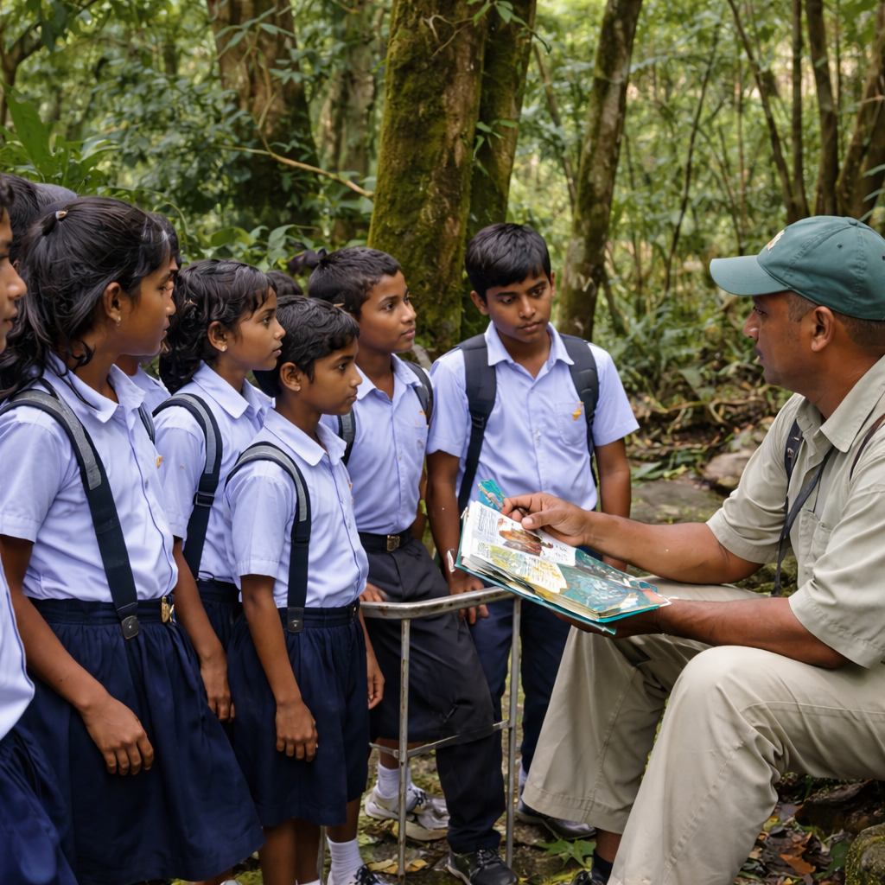
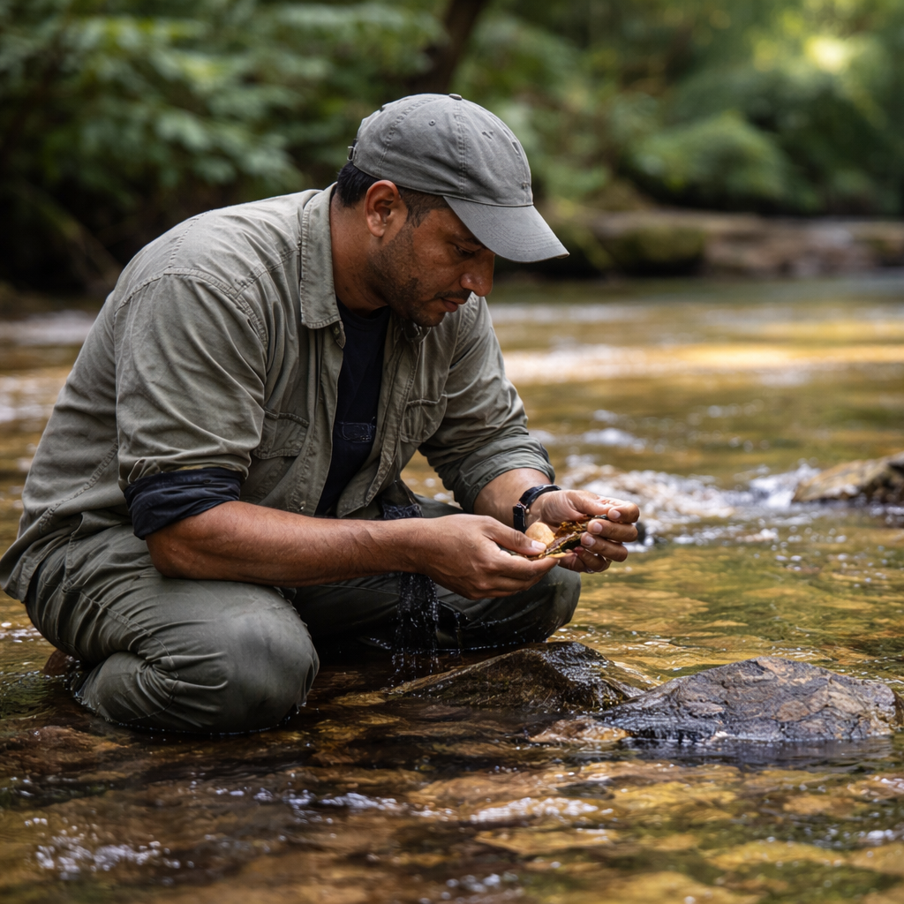
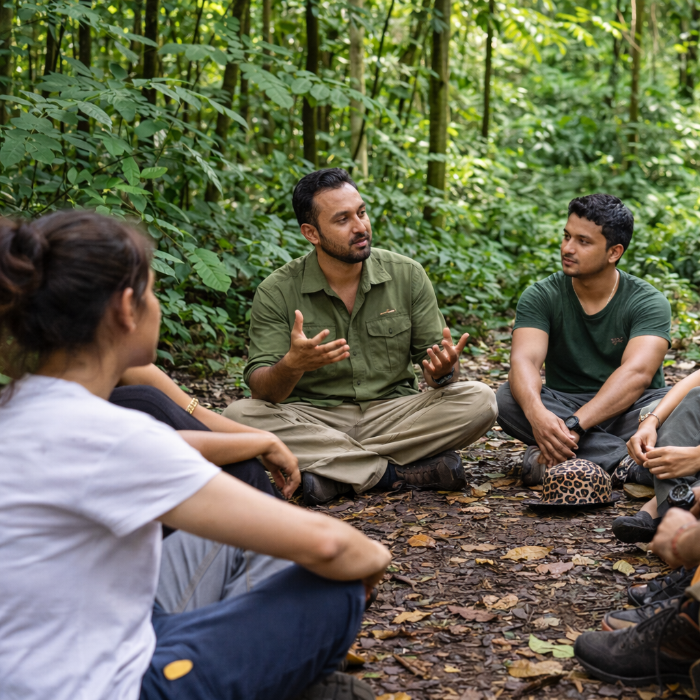

首页/自然课堂
美语（Priyanwada Rathnayake）通过亲身体验、观察以及与斯里兰卡生态系统的连接来教授自然知识。每一堂课都会根据团体量身安排。

课程在岛上一些最重要的栖息地进行，节奏和深度根据您的团体设定。
在大自然中动手实践，以课堂无法做到的方式，培养各年龄段学生的环保意识。

面向环境科学、考古学、动物学和生态学专业的学生，在斯里兰卡的重要栖息地进行。

沉浸式的自然日，帮助团队重新与自然、与彼此建立连接。
告诉我们您的团体情况、人数和希望学习的内容，我们会为您安排课程。